Virtual WAN
Virtual WAN


Steps to install
- install virtual WAN
- create the Hub inside VirtualWAN
- map it with the VNets and on- premise
Types of VirtualWAN
- There are 2 types of VirtualWAN
- Standard
- Basic
Step 1: lets create 2 VNet's and one one VM in it
- the public IP would be off in both the cases
- VNET:
- VM :
- IP range : <10.1.0.0/16>
- VNET:
- VM :
- IP range : <10.2.0.0/16>


 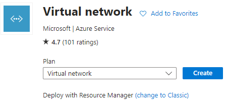
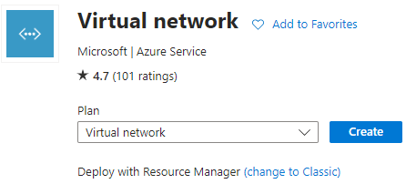


 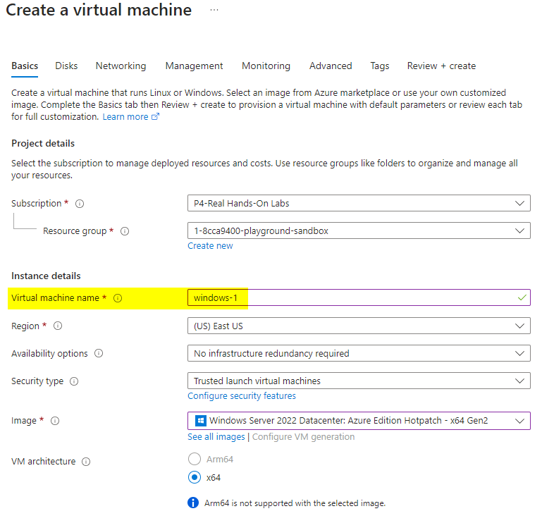
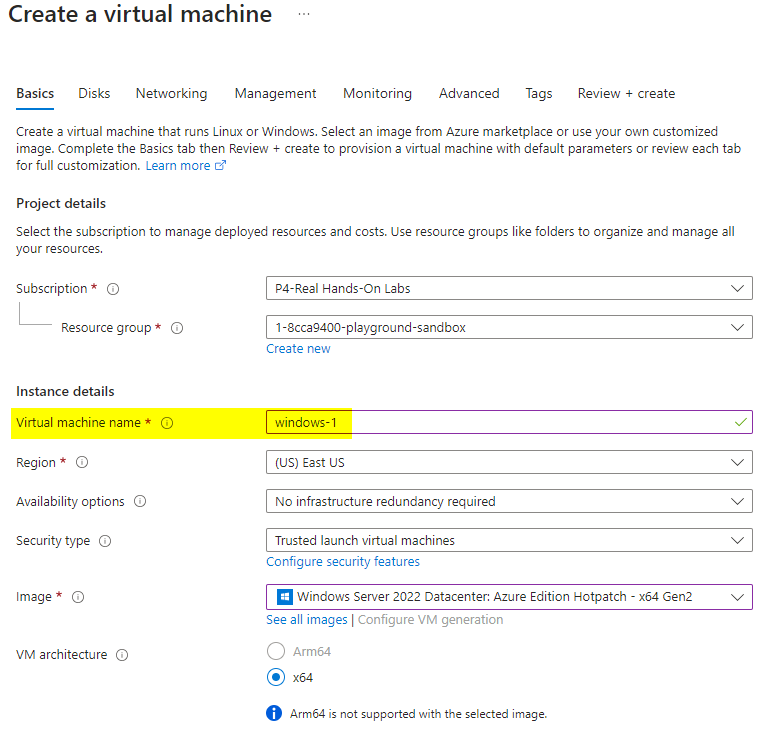

 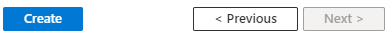
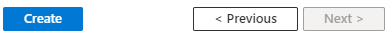


Step 2: create VirtualWAN
- Name : pyVirtualWAN
- Type: Standard


Step 3 : create HUB
- Name : pyHub
- Hub private address space : <10.3.0.0/16>
- is The hub's address range in CIDR notation.
- its like a VNET so we need to provide an IP range for it, which has to be unique
- Virtual Hub Capacity :
- means how many VMS in total the hub can handle
- Hub Routing Prference:
- its VPN or
- ExpressRoute

step 4 : create Virtual Network Connection
- Name : PyWAN-VNET1
- Name : PyWAN-VNET2


step 5 : User VPN Configuration
- first create root and child Certificate
- generate certificate : https://learn.microsoft.com/en-us/azure/vpn-gateway/vpn-gateway-certificates-point-to-site


 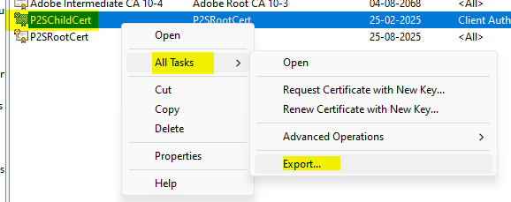
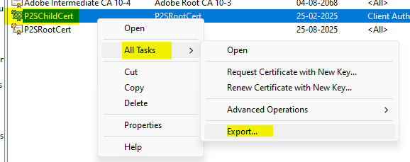
 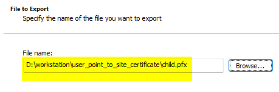
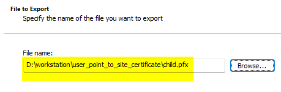

 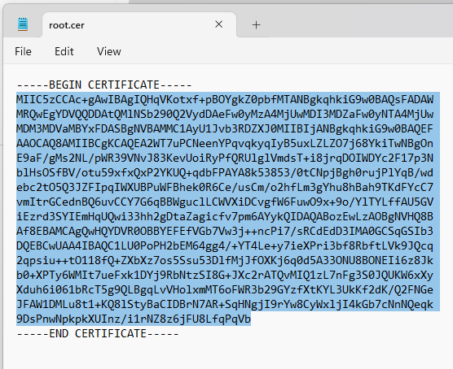
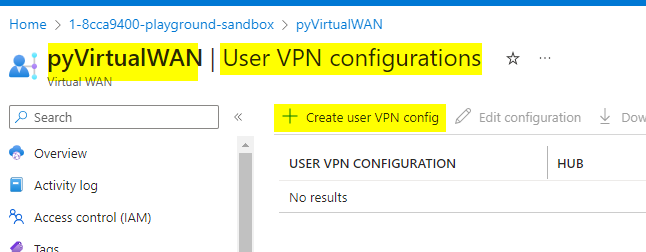
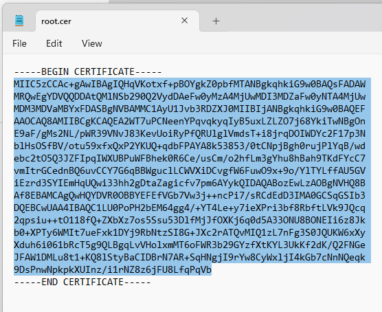
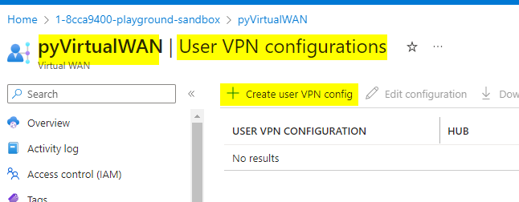


Step 6 : User VPN configuration will only work once we have Gateway created
- go to Virtual WAN => Hub => User VPN (Point to Site) => Create User VPN Gateway
- you need to mention client address pool : <172.16.0.0/16>


step 7 : Download virtual WAN user VPN profile
completed